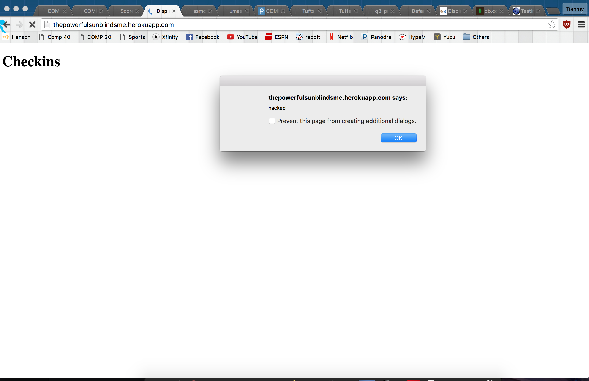
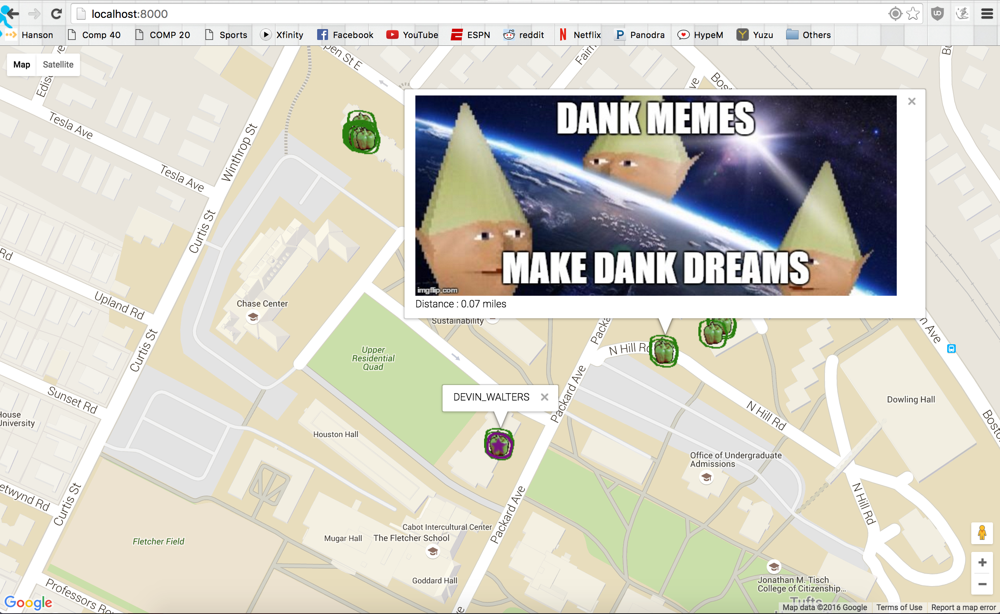
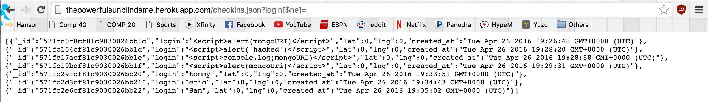
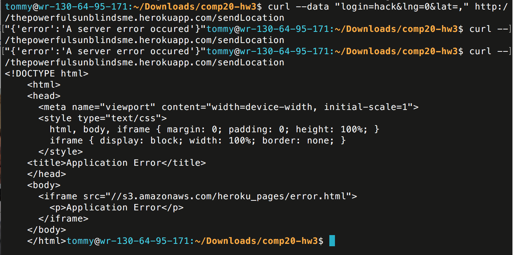
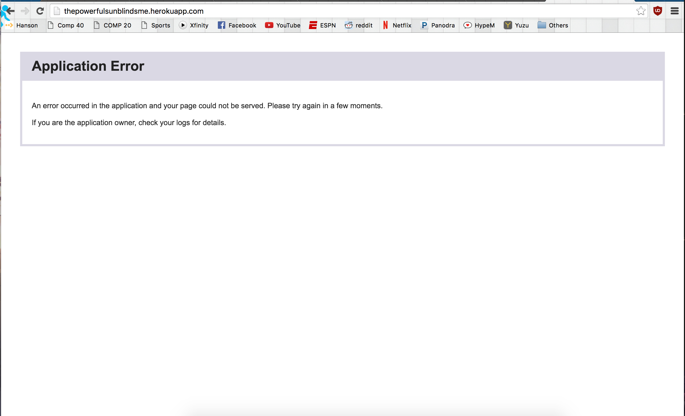

Written by Chao Tang, 4/27/2016
This assessment tests the security and privacy of client-Side and server-Side of my partner's (Jeremy Colebrook-Soucie) Landmarks assignment. The client-side of the code uses the Google Maps API and the geolocation API to send the user name and current location of the user to the landmarks server, and then display the JSON response on the map. The server-side of the assignment uses MongoDB to store information on 18246 landmarks and users who have made requests to the site. It handles POST request from the client-side by adding the user to the database and sending back all user information and landmarks within a mile. The index page shows all users who have checked in. And there is also a /checkins.json that takes an username as query parameter and returns all the times this user has checked in.
In this assessment, I consider security issues as issues that distrupt the intended operations of the web applications, and I consider privacy issues as issues where information that should be hidden is exposed.
I first performed "black-box" testing on the both sides of the assignment using curl and my browser, testing for obvious vulnerabilities and "curling" all kinds of invalid requests. Then, I tried scanning the website with a vulnerability scanner, OWSAP ZAP. Finally, I reviewed my partner's server-side source code and performed further "white-box" testing.
Most of the issues found are casued by blindly trusting user input without first verifying it. These vulnerabilities can have a range of effects on both the server-side web application, including exposing all user data, changing the behaviour of the website, and outright crashing the server. In turn, this can affect the client-side by displaying the wrong information or refusing to connect.
Affects GET on the index page
Severity: High (Security Issue)
Consequences: Allows attackers to inject client-side javascript code into web pages served to the client, which will be executed when a client accesses the index page.
Example: Using the the curl command "curl --data "login=<script>alert()</script>&lng=-71.1200&lat=42.40881" http://thepowerfulsunblindsme.herokuapp.com/sendLocation" and then accessing the server index page via browser shows this result:

This is one of the most common vulnerabilities on the internet, and it is casued by not sanitizing user input from POST properly. Specifically, the "login" field in the POST request can contain javascript code. In the right hands, this exploit can be used to crash the user browser or even bypass same-origin policy of another web application. I found this issue by trying different curl commands to /sendLocation.
Solution: Sanitize the login field by putting in the following line immediately after parsing the request: "login = login.replace(/[^\w\s]/gi, '');"
Affects GET on the index page and the client-side web page
Severity: Medium (Security Issue)
Consequences: Similar to the XSS mentioned above, this vulnerability allows attackers to inject HTML elements and code into web pages through POST parameters, which will then be executed when a client accesses the index page and in the Google Maps API on the client-side.
Example: Using the curl command "curl --data "login=<img src='https://i.imgflip.com/vw7te.jpg'>&lng=-71.1200&lat=42.40879" http://thepowerfulsunblindsme.herokuapp.com/sendLocation" and then accessing the server index page shows this result:
Accessing the client-side web page shows this:

Again, this is caused by not sanitizing input from POST properly. Since it's not scripts that's being injected, the potential damage that can be done is limited. However, it can still cause uninted behaviour for clients viewing the website. I found this issue by trying different curl commands to /sendLocation.
Solution: Sanitize the login field by putting in the following line immediately after parsing the request: "login = login.replace(/[^\w\s]/gi, '');"
Affects /checkins.json (Privacy Issue)
Severity: Very High
Consequences: Anyone is able to access the checkin information of all users through /checkins.json, which is abolutely not the intended behaviour and a huge privacy issue.
Example: By entering "http://thepowerfulsunblindsme.herokuapp.com/checkins.json?login[$ne]=" in any browser, attacker is able to get all checkins without actually needing any logins. The result is as follows:

This is caused because of the way /checkins.json is implemented. In line 68 of index.js, the query "db.collection('userdata').find({login:userLogin})" gets interpreted as "db.collection('userdata').find({login:{$ne:""}})" with the request shown in the example, thus it will return all entrys where the login is not empty. I found this by messing with the query input, and consulting Ming (and his video at DEFCON).
Solution: To avoid queries like this, the query has to be sanitized beforehand, either using a regular expression similar to the ones above or an outside library.
Affects EVERYTHING, both client-side and server-side (Security Issue)
Severity: Very High
Consequences: Upon sending TWO POST requests in a row (For unknown reasons, one request will not work) containing invalid JSON parameters (lat=,), the web application crashes and trying to interact with it in anyway gives an Application Error. This persists until a server reboot (or around 30 mins on heroku).
Example: Sending two curl requests as follows results in the behavior shown below:

